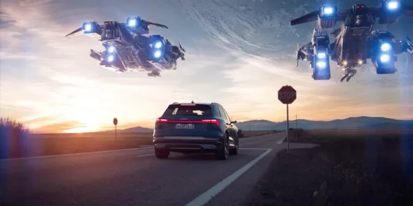
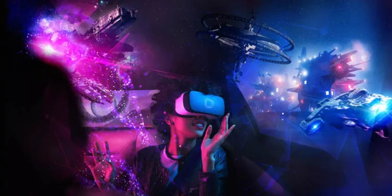

On 2022-03-09

Holoride is a start-up whose project is to create a virtual reality experience for passengers in a vehicle by offering games in phase with the movements of the car or by offering access to virtual worlds. The Holoride project is therefore in line with other metaverse projects.
This company, with the desire to revolutionize the experience of car journeys, could find outlets in the field of autonomous driving. This is why it is supported by Audi and Tesla car dealerships and other companies such as Lyft, Weride or Waymo. We are talking about “Transport metaverses”
How does it work?
Holoride runs on technology provided by software development company Terranet. This technology makes it possible to calculate the distance, direction and speed of movement of the vehicle in which we are using sensors. This real-time physical feedback enables a hyper-immersive experience, we feel what we see with almost no latency. In addition, this perfect combination of our senses reduces motion sickness.

Then Holoride is equipped with an Elastic Content, that is to say that it adapts to the different characteristics of the trip (length, type of route and styles of driving) which means that each trip is a unique new adventure. A day trip in town with traffic jams will not give the same virtual experience as a night trip with fluid traffic, for example. The roads and the world around the vehicle will define the environment experienced by the passenger in virtual reality. The Elastic SDK generates content based on map data and helps to integrate the real environment.
What can this be used for?
- Entertainment : Harness the power of real-time motion synchronization for unparalleled in-car or video-streaming gaming experiences.
- Education : Enable interactive learning and historical tours to explore the world with highly engaging and educational content at every turn.
- Productivity : Facilitate a productive, virtual (desktop) environment for working on the go, such as catching up on email or video conferencing.
- Relaxation : Create mindful and relaxing experiences to unwind while enjoying scuba diving or flying over a rainforest.
Sources :